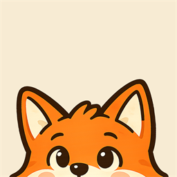
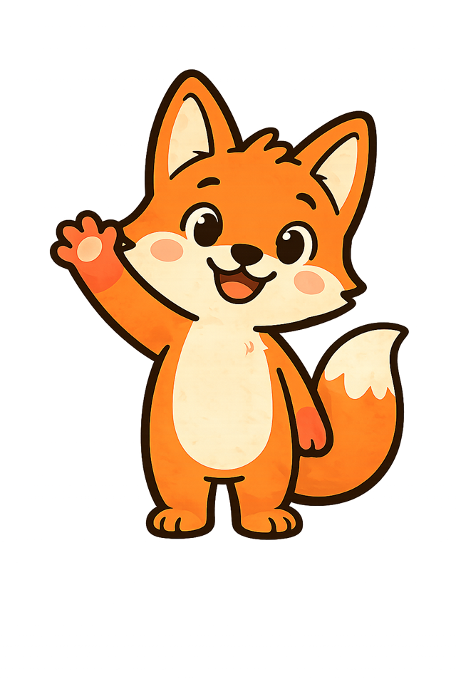
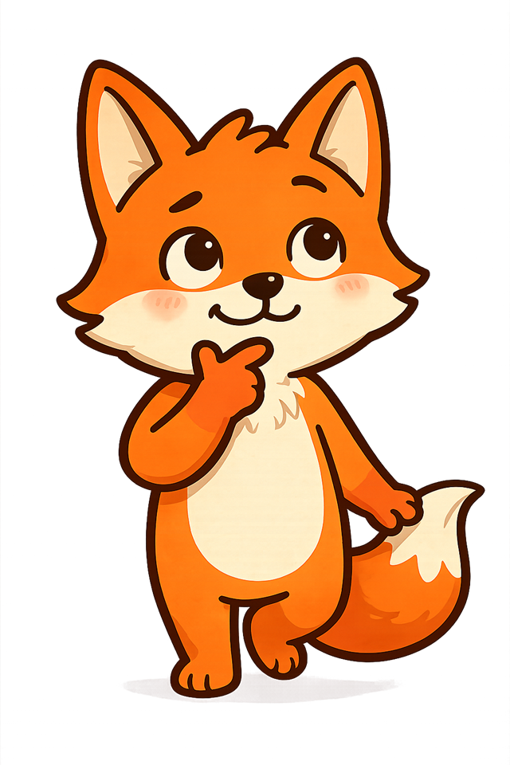
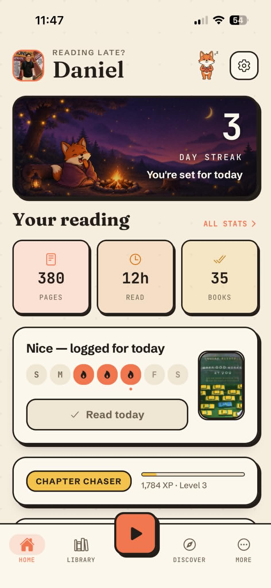
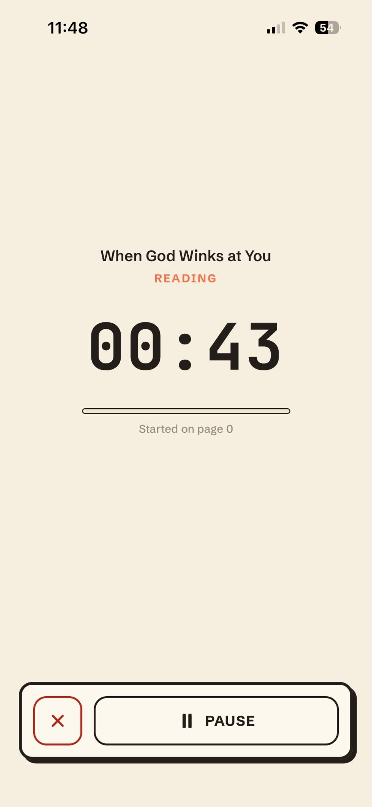
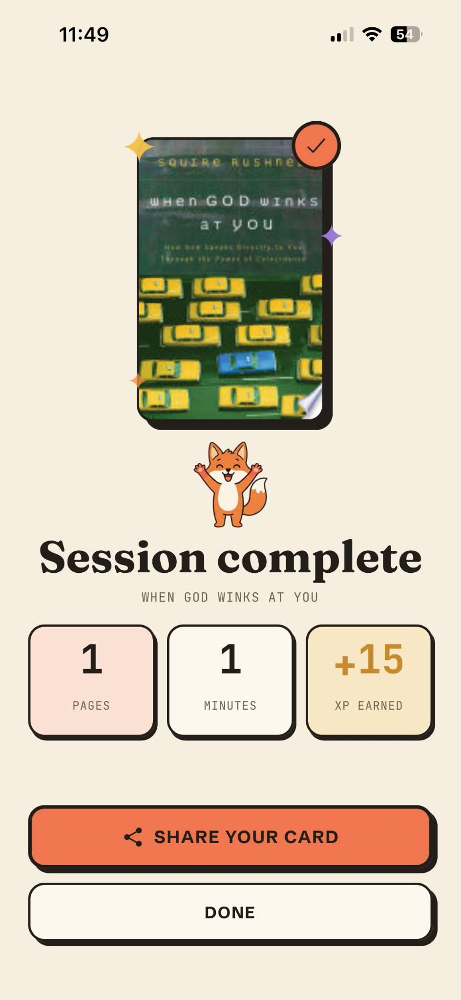
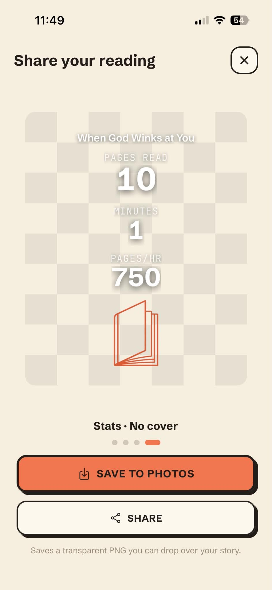
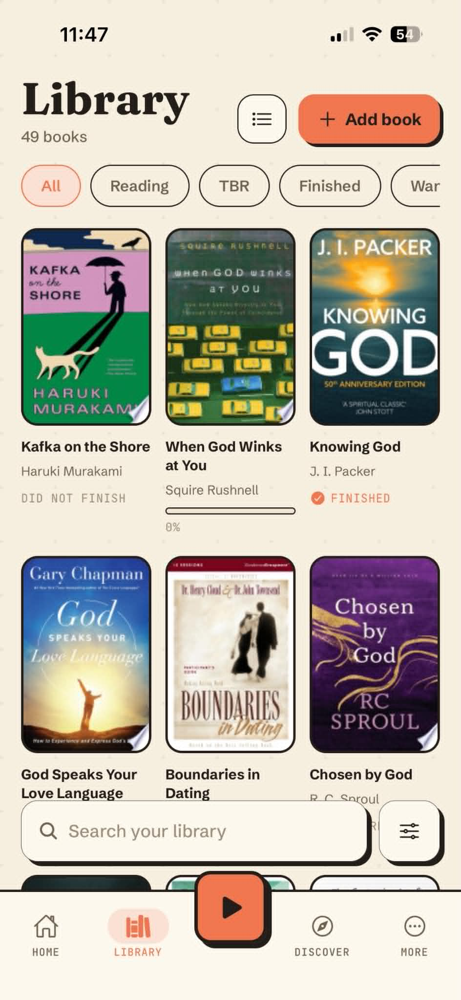
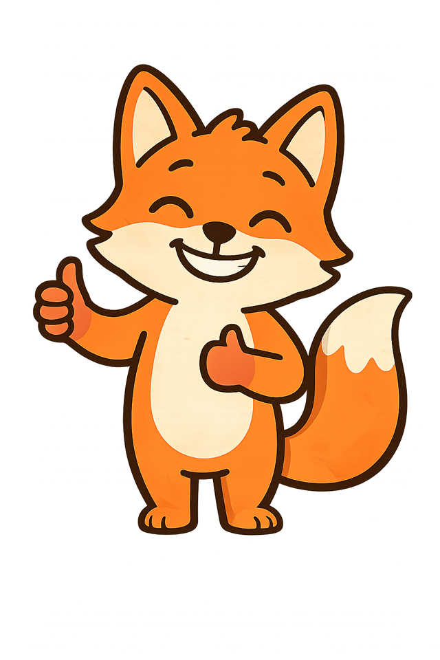

Track every page you read.
Before the book, there was the quire — a gathering of folded pages.
A reading tracker that keeps score

The gap
Reading is the one habit that keeps no score
Your steps get counted. Your sleep gets counted. Your workouts get counted. The twenty minutes you read last night vanished.

Why tracking apps don't stick
They log the finish. Nobody finishes.
What gets tracked today
- A book, once, when it's done
- A shelf that mostly reminds you what you abandoned
- Nothing at all for the two weeks in between
What actually needs tracking
- The twenty minutes you read tonight
- The day you didn't skip
- The pace you're quietly holding
The north star
Treat readers like athletes
Streaks, personal bests, levels you earn a name for. The gamification isn't bolted onto the tracker — it is the product.
The core loop
Four things that pull you back
Streaks
Consecutive reading days, with a grace window so one bad night
doesn't erase a month.
Levels with names
XP on every session. You don't reach level 3 — you become a
Chapter Chaser.
Comeback Challenge
Break a streak and you get a short challenge to rebuild it, instead
of a zero and a shrug.
Reading Insights
Occasional, unpredictable notes about your own reading — a milestone,
a best-ever session, the pace you're on.
Your reading, with a scoreboard

- 01The streak leads. It's the first thing on the screen, every time you open the app.
- 02The week, at a glance. Seven dots. Lit ones are days you read.
- 03Your level has a name. The name is the identity — the number is just how it's counted.
Real screen · test account data
A timer that gets out of the way

While you read

The moment you stop
Proof you can post

Session card · transparent PNG

The shelf you're building
A week with Quire
The whole thing is one loop
01Start a sessionOne tap, then read.
→
02Log the pagesPages, minutes, pace.
→
03Keep the streakThe day counts now.
→
04Get pulled backXP, a level, an insight.
Miss a day and the loop doesn't end — it hands you a comeback.
The ask
Read for a week. Tell us what breaks.
What to send back
1. What made you open the app on day 3?
2. What did you stop using after the first session?
3. Where did it feel like homework instead of reading?
4. Anything that broke, with the screen you were on.
Join the beta
[Add link]
